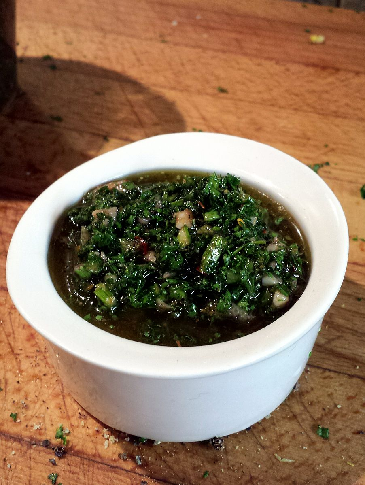

Chimichurri

Dominic Lockyer, CC BY 2.0, via Wikimedia Commons
Description
Chimichurri is a green sauce used for grilled meat, originally from Argentina. It is made of finely-chopped parsley, minced garlic, olive oil, oregano, and white or red wine vinegar. It is usually served on the side with grilled steak, but it can also be used as a marinade.
Ingredients
- 1 cup firmly packed fresh flat-leaf parsley, trimmed of thick stems
- 5-7 cloves pealed garlic
- 2 tablespoons fresh oregano leaves (can sub 2 teaspoons dried oregano)
- 3 teaspoons ground pepper
- 1/4 cup olive oil
- 2 tablespoons red or white wine vinegar
- 1 teaspoon sea salt
Instructions
- Chop parsley and oregano leaves coursely.
- Peal garlic cloves.
- Combine all ingredients in a food processor.
- Pulse until all ingredients are finely chopped and mixed together.
- Enjoy!